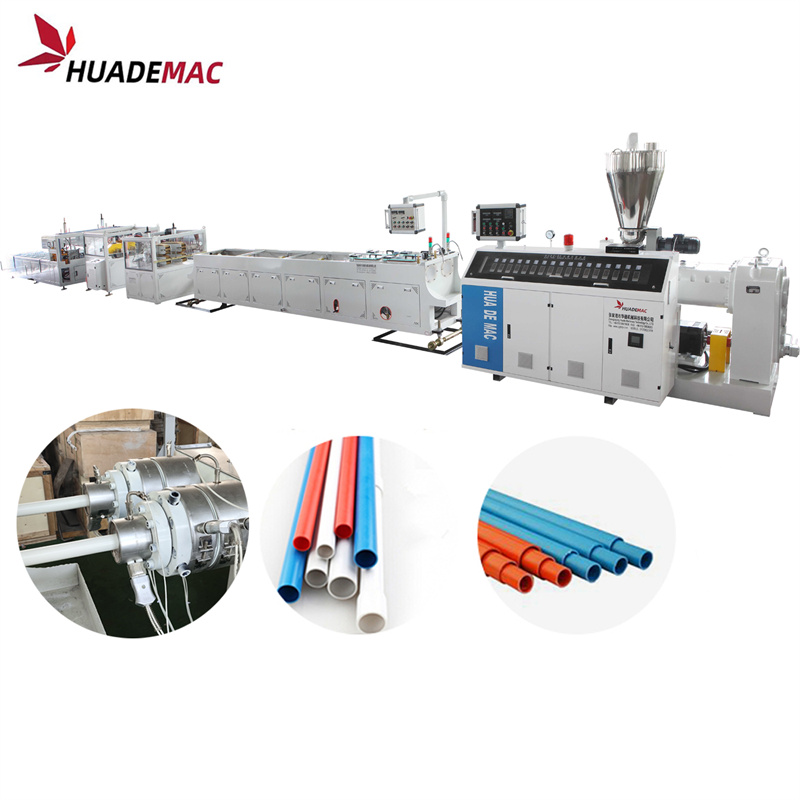
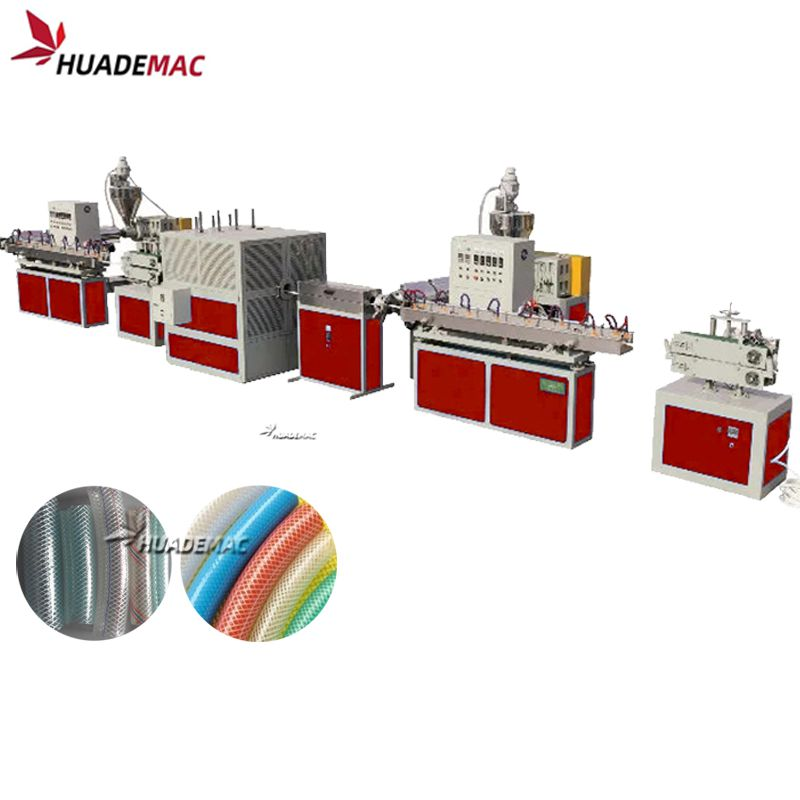
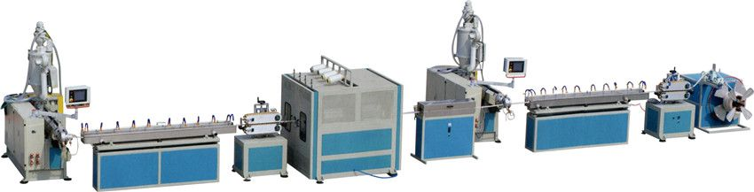

Soft PVC Garden Fiber Hose Making Machine
Make flexible garden hose with a fibre reinforcement layer between the PVC layers.
Inquire about this product Prepare a detailed project brief
Equipment overview
Soft PVC Garden Fiber Braided Reinforced Hose Extrusion Line
Plastic Soft PVC Garden Fiber Braided Reinforced Pipe Hose Pipe/Tube Extrusion Making Machine
PVC Fiber Braided Reinforced Water Hose Tube Pipe Extrusion Machine/Transparent PVC Clear Hose Production Line
PVC fiber reinforced Pipe Production Line is to produce the PVC fiber soft reinforced pipe , the pipe has 3 layers , out and inner layer is the soft plastic , the middle layer is the fiber net , it make the PVC fiber pipe more strong and has the good physical and chemical characters , apply for the pressure or corrosion gas/liquid conveying
It mainly consists of extruder, spray water tank, traction engine, knitting machine and reeling machine. PVC fiber braided hose production line has a good market in worldwide. We can supply PVC fiber braided hose production line with competitive price and high quality.
Technical specifications
Reference configurations from the product catalogue. Confirm output, dimensions and equipment selection for your material and project.
| Model | Diameter Range (mm) | Extruder | Output (kg/h) | installed Power( Kw) | Dimension LXWXH |
|---|---|---|---|---|---|
| HDF45 | Ø8-Ø16 | SJ45/30 | 20-40 | 35 | 15X3.5X2.5 |
| HDF55 | Ø 8-Ø25 | SJ55/30 | 30-60 | 42 | 15X3.5X2.5 |
| HDF65 | Ø 12-Ø50 | SJ65/30 | 40-80 | 50 | 18X3.5X3 |
| HDF75 | Ø 20-Ø50 | SJ75/30 | 60-110 | 65 | 20X3.5X3 |
Detailed Images
Extrusion Process
Plastics extrusion is a high-volume manufacturing process in which raw plastic is melted and formed into a continuous profile. With the development of economy, more and more plastics are used in people's daily life. Consequently, a large quantity of plastic extruder, plastic extrusion line, plastic extrusion machine are used to process PP, LLDPE, LDPE, HDPE, PVC, ABS, etc. in pipe extrusion, profile extrusion, filament extrusion, film extrusion, sheet extrusion and pelletizing.
We have focused on plastic machinery over 21 years with rich experience and strong technology .top quality and the turn-key service including installation , test running and training workers in your local factory . we are your trustworthy partner

Equipment video
Ask about this machine
Soft PVC Garden Fiber Hose Making Machine